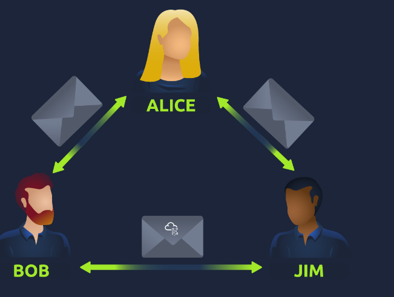
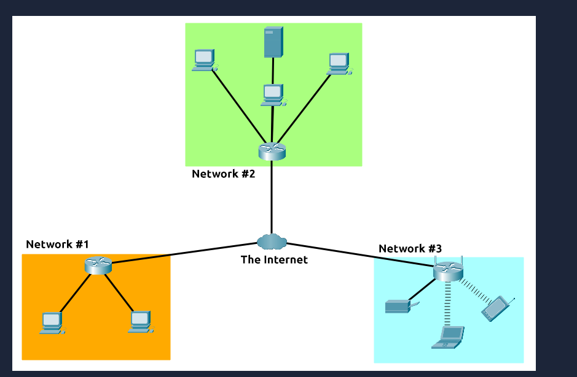
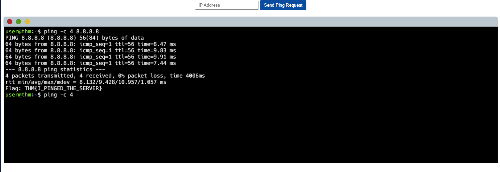

Begin learning the fundamentals of computer networking — networks, the internet, IP addresses, MAC addresses, and ping.
Task 1 — What is Networking?
A network can be formed from just 2 devices all the way up to billions — ranging from laptops and phones to security cameras, traffic lights, and farming equipment.
Networks are deeply integrated into everyday life, often operating invisibly in the background.
Answer the questions below
What is the key term for when devices are connected?
Network
Task 2 — What is the Internet?
The internet is a network of networks. Small individual networks are called private networks; the networks that connect them together are called public networks — collectively known as the internet.
The first iteration of the internet was the ARPANET project in the late 1960s, funded by the US Department of Defense — the first documented network in action.
It wasn't until 1989 that the internet as we know it today was invented by Tim Berners-Lee with the creation of the World Wide Web, transforming the internet into a repository for storing and sharing information.
Devices identify themselves on a network using a set of labels — an IP address (name) and a MAC address (fingerprint).

Basic internet diagram — private networks joined together via public networks

The internet made up of many small private networks connected together
Answer the questions below
Who invented the World Wide Web?
Tim Berners-Lee
Task 3 — Identifying Devices on a Network
To communicate and maintain order, devices must be both identifying and identifiable on a network. Two identifiers are used: IP address (the name) and MAC address (the fingerprint).
IP addresses are divided into four octets (e.g. 192.168.1.100). The value of each octet summarises to form the device's IP address. IP addresses can change between devices but cannot be active more than once within the same network. Addresses can be public (used to identify a device on the internet) or private (used to identify a device within a local network).
IPv4 has been exhausted. IPv6 was created to solve this — supporting over 340 trillion IP addresses and being more efficient due to new methodologies.
MAC addresses are the fingerprint of the device itself — a 12-character hexadecimal number (e.g. a4:c3:f0:85:ac:2d). The first half is vendor-specific (identifies the manufacturer); the second half is unique to the network interface. MAC addresses are literally burnt into the network card at manufacture — they cannot be permanently changed, but they can be spoofed, which can fool poorly implemented security designs that rely solely on MAC filtering.
Answer the questions below
What does the term "IP" stand for?
Internet Protocol
What is each section of an IP address called?
Octet
How many sections (in digits) does an IPv4 address have?
4
What does the term "MAC" stand for?
Media Access Control
Deploy the interactive lab and spoof your MAC address to access the site. What is the flag?
THM{YOU_GOT_ON_TRYHACKME}
Task 4 — Ping (ICMP)
Ping is one of the most fundamental network tools, pre-installed on operating systems like Windows and Linux.
It uses ICMP (Internet Control Message Protocol) packets to determine the performance of a connection between devices — for example, whether a connection exists or is reliable.
Ping works by sending ICMP echo packets to the target device and measuring the time taken to receive an echo reply. This time measurement indicates connection speed and reliability.
Ping can be run against devices on a local network or against websites. Syntax: ping <IP address or website URL>

Ping syntax and example output showing round-trip times